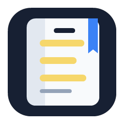

Connect Notion
Create a Notion page, share it with your integration, and paste the page link into LearnBetter.

LearnBetterPDF reader for Notion study notes
LearnBetter is a Windows desktop reader that captures selected PDF text, generates one study question, and sends both to Notion as a toggle. Your answer stays exactly equal to the highlighted text.
How to use it
Create a Notion page, share it with your integration, and paste the page link into LearnBetter.
Use OpenAI API for hosted generation or Ollama for local question generation on your machine.
Select text in the PDF, right-click, and LearnBetter appends a question toggle to Notion.
Each capture stores the generated question, exact selected answer text, source page, PDF fingerprint, and Notion sync status.
Failed Notion or AI syncs stay in a retry queue. LearnBetter retries when the app opens, network returns, or setup is saved.
Windows, a Notion page, and either an OpenAI API key or a running Ollama model such as llama3.1:8b.
This download page is containerized with Nginx and deployed to Kubernetes through Argo CD GitOps.
Ready to study